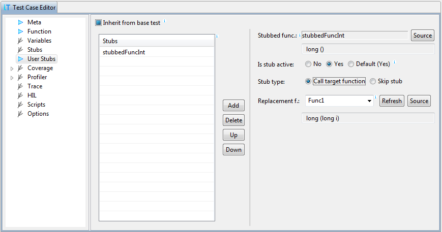

User Stubs
The advantage of normal stubs described above is flexibility.
They also don't require any changes in target code. However, their
execution is slow, because the target is stopped for each stub
hit.
User stubs, on the other hand, are implemented as modification of
the stubbed function on the target. Modifications can be of two
types:
- Call to other function on target is put at the start of the
stubbed function. The other function is called replacement or
stub function, and is usually written specifically for testing
purposes. It is not used during normal execution of the
program.
- Return instruction is put at the stubbed function
start. This means that return value and output parameters are
not set, so this approach is generally useful only for functions
returning void and without output parameters or other side
effects, like modifications of global variables. These type of
stubs are called skip stubs, because they skip function
call.
Note that both modifications mentioned above are performed in
object code on the target by testIDEA, so you don't have to
rebuild and download the code. After test the original object
code is restored.

Note: It is important that prototypes of the stubbed and
replacement functions match, otherwise results can be unpredictable.